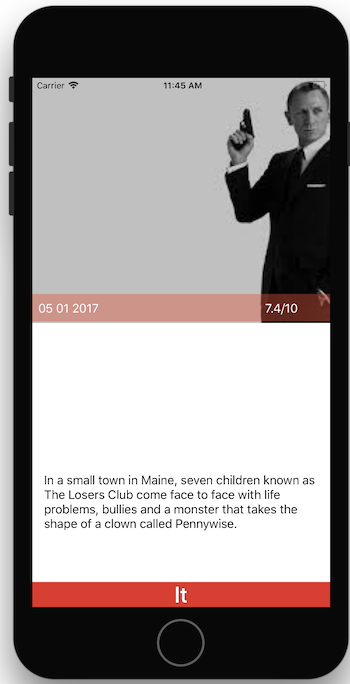

Parsing de données
Introduction
Dans cet atelier nous allons créer un modèle de données correspondant à la base de TheMovieDB.org.
Cela nous permettra de commencer à utiliser les concepts de Swift, notamment les optionals et les variables.
Notions nécessaires : optionals (init et cast), MVC, déclaration de variables, format de dates, format de string
Exercice 1- Création du modèle
Dans un nouveau projet Xcode (Single View App), créez une classe Movie avec :
- un titre :
String - un synopsis :
String - une note moyenne :
Double
Exercice 2 - Parsing naïf
Le but va être de parser le fichier suivant : BestMovie.json
- Ajoutez le fichier BestMovie.json à votre projet
- Ajoutez le fichier JSONHelper.swift (c'est une classe qui permet de récupérer facilement un tableau de dictionnaires, à partir d'un fichier json local en utilisant
JSONSerialization) - Transformez le contenu du fichier en un tableau de dictionnaires
- Parcourez ce tableau de dictionnaires pour créer des objets de type Movie correctement remplis. Swift étant fortement typé, pensez à faire un cast (
object as? Stringpar exemple). - Pour tester que ca marche, faites un print des objets récupérés (astuce : vous pouvez ajouter une variable
descriptionà la classe Movie pour indiquer comment print doit afficher un Movie)
Exercice 3 - Dates
- Ajoutez une variable releaseDate à votre classe Movie de type Date
- Récupérez l'info dans le JSON en utilisant un
DateFormatterpour passer d'un String à une Date
Exercice 4 - Parsing à la mode Swift 4
Le but de l'exercice 2 était surtout de vous faire manipuler du Swift. En pratique, on fait rarement ce processus à la main. Depuis Swift 4, on peut utiliser le protocole Codable pour cela.
- Adaptez votre projet pour qu'il utilise le protocole
CodableetJSONDecoder
Pour aller plus loin : on est ici dans un cas simple, mais le protocole semble suffisament puissant pour couvrir les cas plus complexes : voir cet excellent tutorial de Ben Scheirman pour plus d'infos.
Exercice bonus - Affichage des données
- Reprenez l'écran de l'atelier précédent, et rajoutez la note et la date. Note : ne vous inquiétez pas si le layout s'adapte mal aux tailles d'écrans. Continuez à tester dans le simulateur de l'iPhone 8.
- Remplissez l'écran avec les données du premier film de votre tableau. Utilisez les outlets et changez les valeurs dans
viewDidLoad. Utilisez leDateFormaterpour afficher la date correctement. Note : laissez une image fixe pour l'instant - Ajoutez un bouton next qui permet d'afficher le prochain film de la liste (en fin de liste revenez au premier élément)
